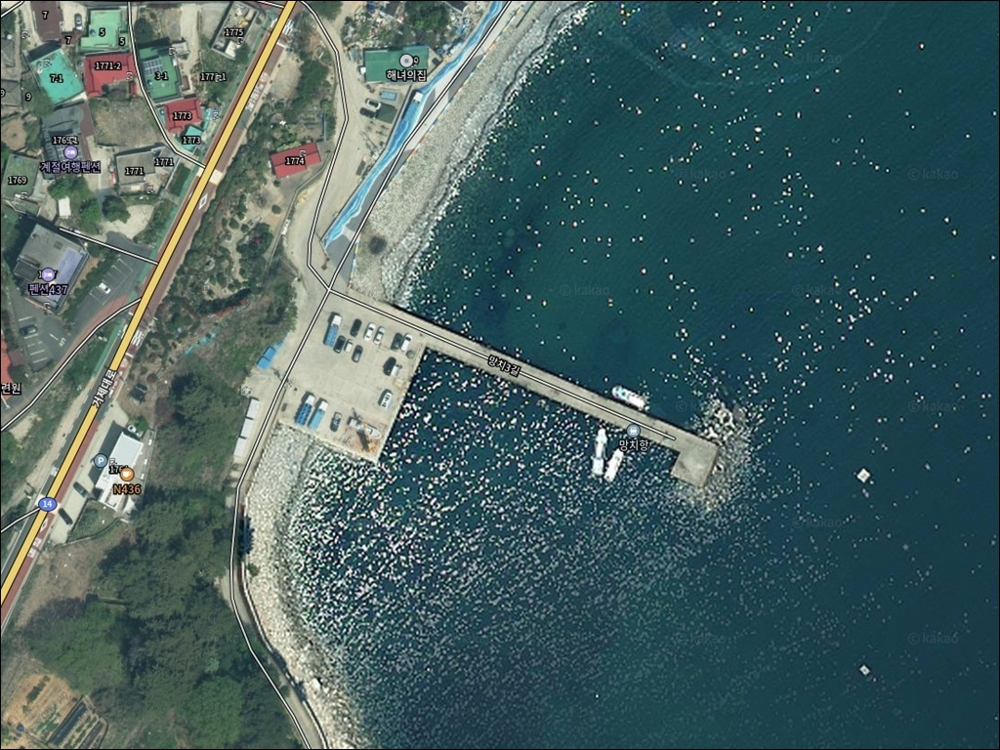
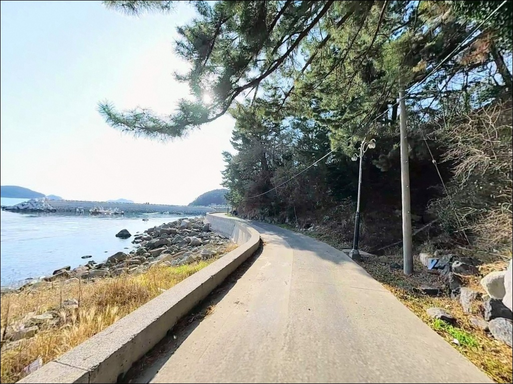
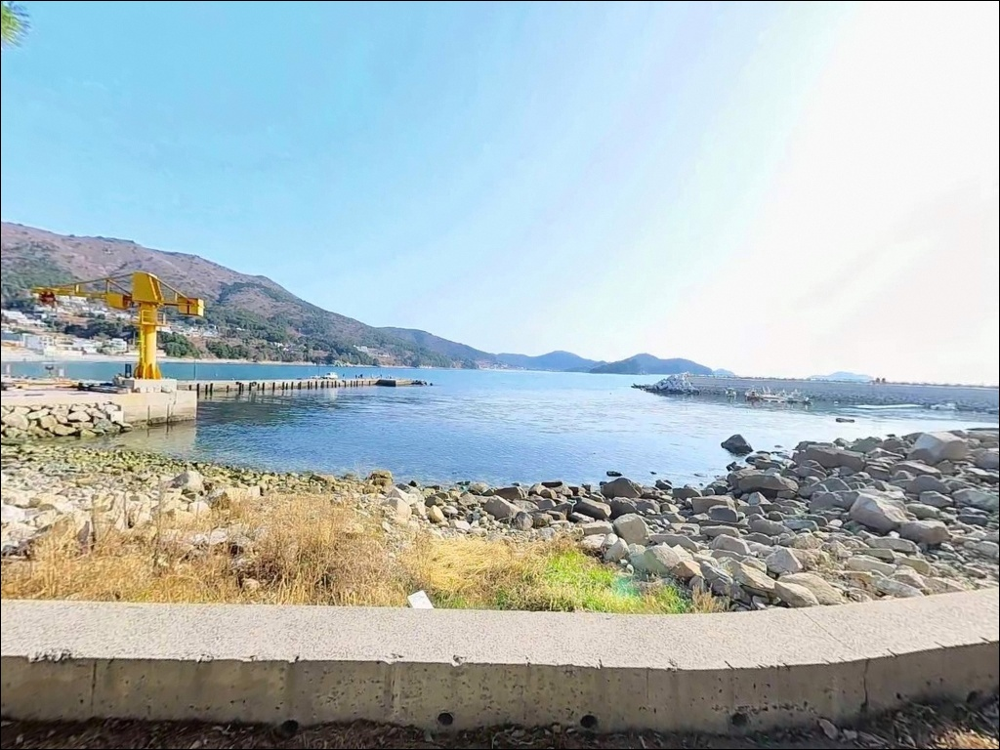
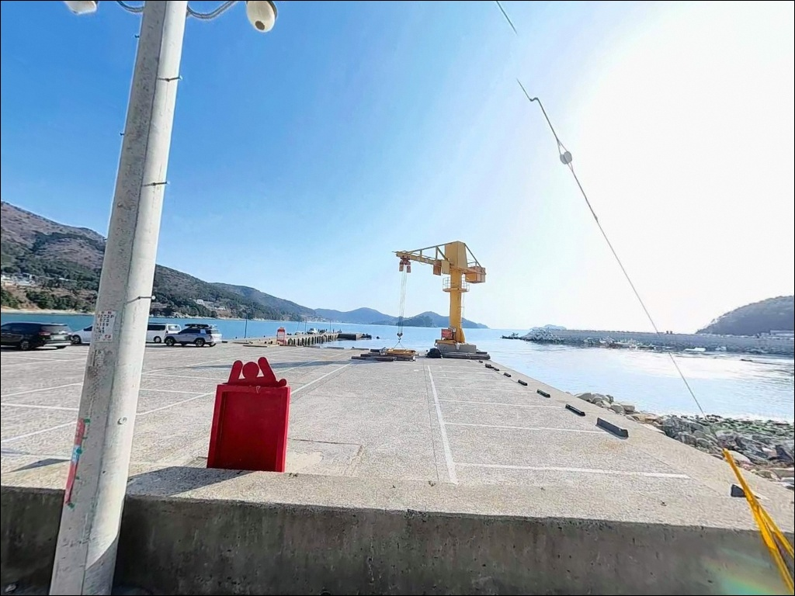
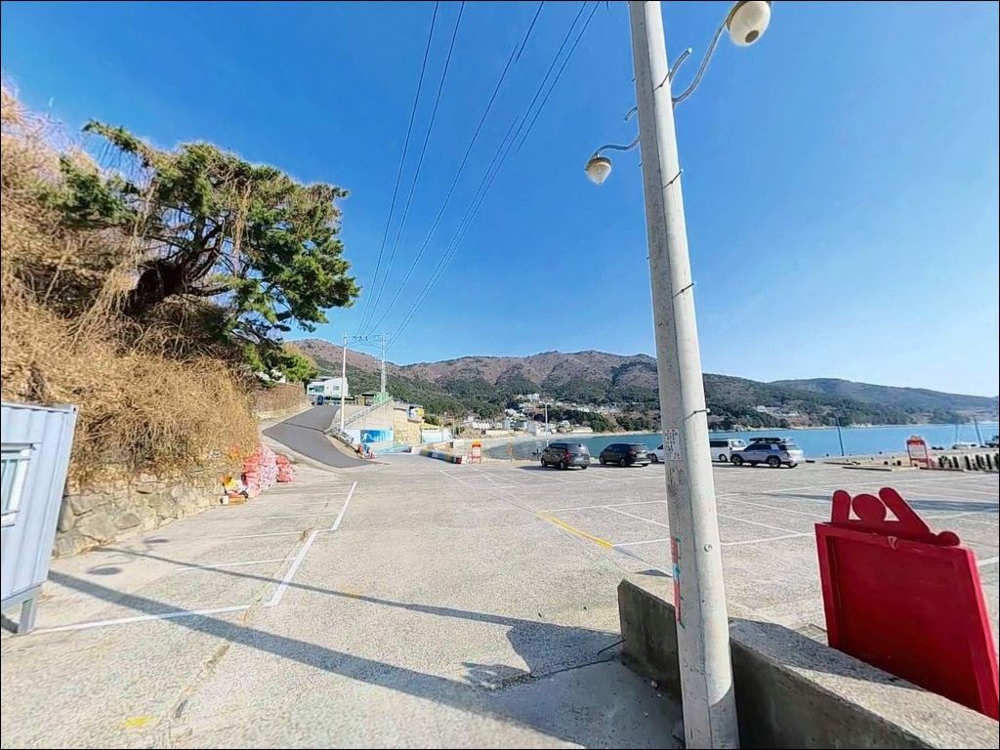
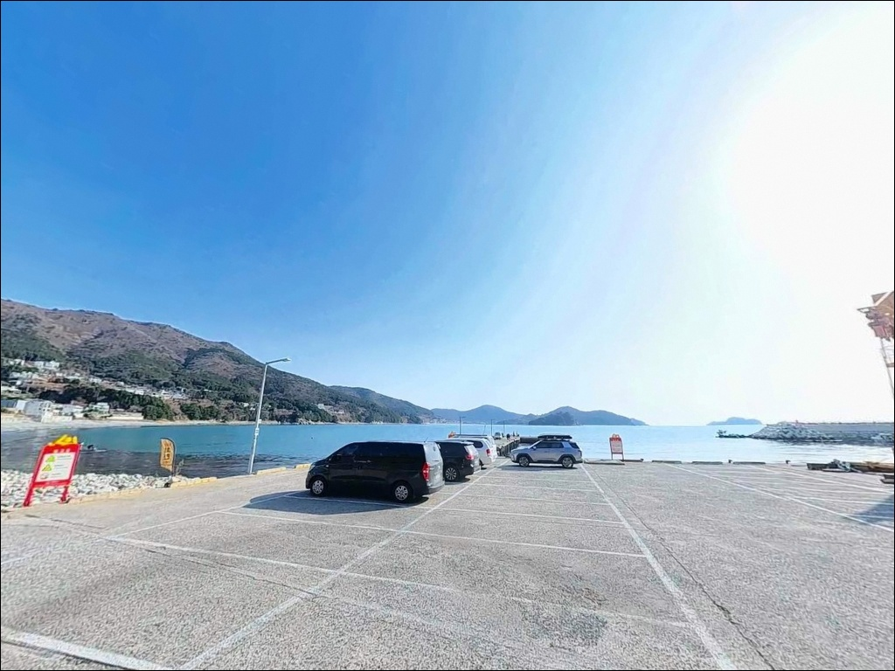
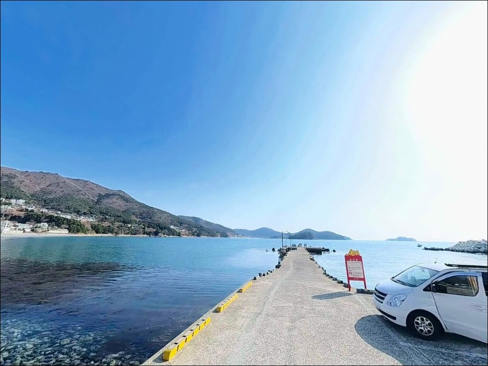
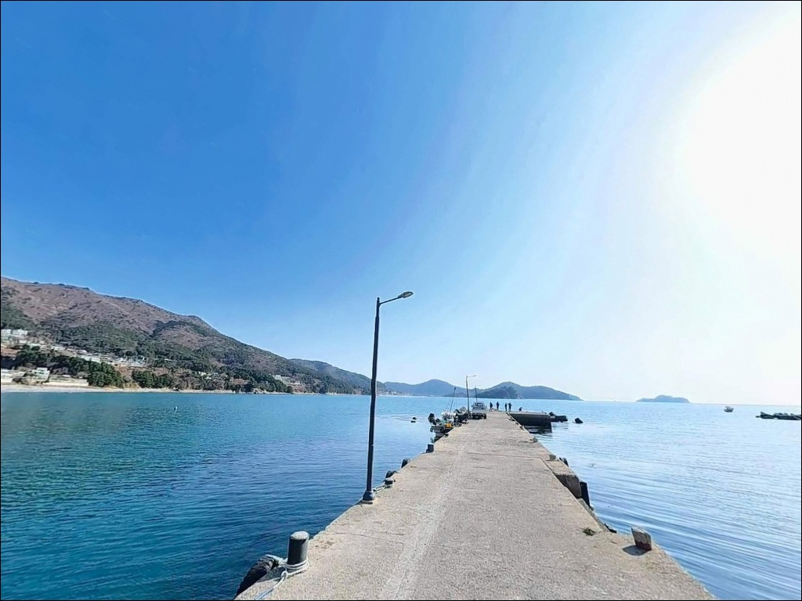
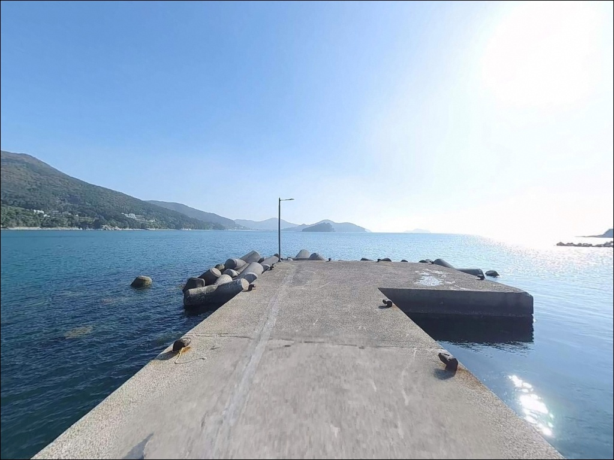

내만형 채비로 갔다가 당황할 때, 방파제 끝단 수심 10m 거제 망치항
이 페이지에는 광고(제휴 링크 포함)가 있으며, 광고 링크를 통해 구매하면 운영자가 판매 수익 또는 수수료를 받을 수 있습니다. 포인트 사진: 카카오맵 스카이뷰·로드뷰. 이 페이지의 지도·사진 이미지는 카카오맵의 실제 서비스 이미지와 다를 수 있습니다.


포인트 안내
망치항
경남 거제시 일운면 망치리 434-11
망치항에서 가장 많이 하는 실수는
내만형 채비 구성 그대로 진입하는 것입니다.
방파제 끝단 수심이 10m에 달하고
외항이 외해 방향으로 열려 있어,
저부력 채비나 에깅 기준 장비를 갖추지 않으면
현장에서 운용 자체가 어려워집니다.
채비 방향을 사전에 결정하지 않고 가면
포인트에 도착해서도 낚시를 시작하지 못하는
상황이 생기는 포인트입니다.
거제 남부 해안선의 분기점에 자리한 망치항은
선착장·방파제·갯바위·몽돌해변이
한 자리에서 이어지는 복합 지형입니다.
내항은 서북쪽 산으로 막힌 만 구조라
서풍·북서풍 영향이 상대적으로 제한적이고,
방파제 끝단부터는 동쪽 외해 방향으로
바로 노출되는 구조입니다.
이 글은 망치항의 지형 구조와
낚시 방식별 운용 조건, 진입 여건,
차박 가능성에 집중합니다.
조황 단정이나 특정 어종 보장은
이 글의 범위에 포함되지 않습니다.

1. 진입 동선과 포인트 접근성
거제해안로(지방도 1018호선)에서
망치 마을 방향으로 분기하는 진입로는
포장이 완료되어 있습니다.
일반 승용차와 소형 RV는
선착장까지 직접 진입이 가능하지만,
대형 캠핑카는 마을 내부 소로 폭이 좁아
진입에 제약이 따르는 구간이 있습니다.
출발 전 위성지도로 분기점 이후
소로 구간을 미리 확인해두는 것이 좋습니다.
주차는 항 입구 공터와
망치몽돌해수욕장 공용주차장
두 곳이 기본 후보입니다.
항 입구 공터는 2~4대 수준의 소형 공간이라
시간대에 따라 선점 경쟁이 생길 수 있으며,
해수욕장 공용주차장은 거리가 조금 있지만
도보로 낚시 포인트 이동이 가능한 구조입니다.
낚시 포인트 바로 뒤에 주차하고
장비를 내리는 형태로 운용하는 방문객이 많아
이른 도착이 자리 선점에 유리합니다.
회차 공간은 항 내부와 마을 공터에서
확보가 가능한 수준입니다.
소형 선착장 구조 특성상 어선 접안 동선을
방해하지 않는 위치를 먼저 파악하는 것이
현장 매너의 기본입니다.

2. 차박 환경과 야간 체류 여건
망치항 주변은 펜션 단지와 민가가 혼재하는
소규모 어촌 마을입니다.
야간에도 가로등과 펜션·상가 조명이
일부 작동하여 완전한 암흑 환경은 아닙니다.
인근 숙박 시설과 인접한 환경 특성상
야간 소음에 주의하는 것이 기본 매너입니다.
차박 전용으로 설계된 포인트가 아니라
낚시 거점형 포인트에 가까운 특성이라,
장시간 정박보다는 낚시 후 이동하는 형태가
현실에 맞습니다.
항 입구 공터 주차 공간이 좁아
차박을 계획하고 간다면
공간 선점 여부를 현장에서 먼저 확인해야 합니다.
방파제 외항 방향은 야간에도
낚시가 이루어지는 구간입니다.
선착장 주변 가로등 집어 효과가 있어
야간 볼락 루어 운용이 가능하지만,
테트라포드 구간 접근 시에는
개인 조명 장비와 구명조끼가 기본입니다.


3. 주변 편의시설 및 인프라 현황
망치몽돌해수욕장이 선착장 인근에 위치하여
해수욕장 공중화장실을 도보로 이용할 수 있습니다.
해수욕장 도로변에 낚시 용품 판매점이 위치하며,
편의점과 카페도 반경 1km 내에서
이용이 가능한 환경입니다.
구조라 방향으로 약 3km 이동하면
GS25 편의점과 음식점, 낚시배 선착장 등
더 큰 규모의 인프라가 집중되어 있습니다.
출조 전 식사와 소모품 보충이 필요하다면
구조라 방향에서 미리 해결하고
망치항으로 진입하는 동선이 효율적입니다.
응급 상황에 대비해
거제 고현 방면 종합병원까지
약 20~25km 거리임을 파악해두고,
비상약품과 응급 연락처는
출발 전 미리 준비하는 것이 기본입니다.

4. 출조 전 준비사항과 체크 포인트
출조 전 가장 먼저 확인해야 할 것은
물때와 기상 예보입니다.
물때란 하루 두 번 반복되는 조류의 흐름 주기를 말하며,
낚시 어종의 활성도와 채비 컨트롤에
직접 영향을 줍니다.
바다타임에서 망치리 기준 물때를 확인하고
들물~정조 타이밍에 맞춰
입장 시각을 조율하는 것이 기본 전략입니다.
망치 일대는 거제 남부 외해 기준
풍랑특보가 적용되는 구역입니다.
내만 기준으로 기상을 판단하면
현장 파도 상황이 예보와 다를 수 있으므로,
기상청 해상예보를 당일 아침에
반드시 다시 확인하는 것이 좋습니다.
파고 1m 이상 예보 시
갯바위와 방파제 끝단 접근은 자제하는 것이
기본 안전 기준입니다.
찌낚시를 주력으로 계획한다면
수심 10m 이상 외항 구간에 맞춰
저부력 구멍찌 기준의 채비를 미리 세팅합니다.
에깅을 계획한다면 3.5호 노멀 타입을 기본으로 하고,
조류가 빠른 구간에 대비해
딥 타입도 함께 챙기는 편이 유리합니다.
구명조끼와 야간 헤드랜턴은
방파제·테트라포드 구간 모두에서 기본 장비입니다.

5. 거제 망치항에서 찌낚시·에깅 조과가 달라지는 지형 조건
망치항의 핵심은 방파제·갯바위·몽돌해변
3가지 지형이 한 포인트 안에서
운용 가능한 복합 구조입니다.
선착장 주변 수심은 3~5m 내외이며,
방파제 끝단 콧부리 구간에서
수심이 10m 이상으로 급변합니다.
외항 방향으로는 15m 이상 깊은 구간도 분포하며,
해초밭과 수중여가 발달한 조건이
어종 다양성의 기반이 됩니다.
방파제 끝단과 외항 테트라포드 구간은
수심 10m 이상의 깊은 자리가 형성되어
찌낚시와 에깅 채비 모두 힘을 발휘하는 구조입니다.
테트라포드 주변은 발판 확보가 가능한 구간과
접근이 어려운 구간이 혼재하므로,
야간 진입 전에 낮 시간대 확인이 먼저입니다.
내항은 서북쪽이 산으로 막혀 있어
서풍·북서풍 조건에서도 파도가 비교적 안정적입니다.
동풍이 강한 날에는 외항 방향이 영향을 받으므로
바람 방향과 세기를 확인한 뒤
자리 선택을 결정하는 것이 기본 판단 순서입니다.
최신 조황은 가기 전에 꼭 검색해 보시기 바랍니다.


6. 망치항에 어울리는 낚시 스타일
찌낚시는 이 포인트에서 가장 운용 범위가 넓은 스타일입니다.
외항 테트라포드 라인과 방파제 끝단 직벽 구간에서
감성돔·벵에돔을 노릴 수 있습니다.
수심 10m 이상 구간에서는 고부력찌보다
제로찌 이하 저부력 구멍찌로
채비 전체를 천천히 가라앉히는 방식이
이 해역의 기본 운용법입니다.
조류가 흐르는 구간에서는
반유동 채비로 흘려보내는 방식이 유효합니다.
에깅도 이 포인트 지형에 잘 맞는 스타일입니다.
에깅이란 무늬오징어·갑오징어를 대상으로
에기(인조 미끼)를 사용하는 루어낚시 방식입니다.
방파제 외항 방향에서 운용하며,
기본은 3.5호 노멀 타입입니다.
조류가 빠른 구간에서는 딥 타입으로 교체하는 것이
현장 대응의 기준이 됩니다.
볼락 라이트게임은
방파제 주변 갯바위 인접 구간에서 운용합니다.
2~3호 지그헤드를 활용하며,
야간에는 가로등 집어 효과가 있는
선착장 주변 밝은 구간에서
소형 루어를 천천히 끌어오는 방식이 유효합니다.
농어를 노린다면 100mm 내외 미노우를
같은 구간에서 함께 운용할 수 있습니다.
원투낚시는 망치몽돌해수욕장 해안선에서 운용합니다.
청갯지렁이 미끼로 보리멸·도다리·양태를 노릴 수 있으며,
몽돌 해저면 구조라 밑걸림이 적어
원투낚시 운용이 비교적 수월한 구간입니다.
출조 전 최신 조황은
"망치항 조황", "거제 일운면 방파제 낚시"
키워드로 검색해보시기 바랍니다.

7. 대안 포인트와 플랜B 동선
망치항 조황이 기대에 미치지 못하거나
주차 여건이 여의치 않을 때는
구조라항이 첫 번째 대안입니다.
북동쪽 약 3km 거리이며,
방파제 규모가 크고 외항 수심도 깊어
찌낚시와 에깅 모두 운용 범위가 넓습니다.
주차 공간도 망치항보다 안정적이어서
차박을 병행할 경우 구조라항을 기점으로 삼는 방식이
현실적입니다.
외해 직면 포인트라는 지형 특성상
기상 변화에 민감하므로,
출조 전 기상 확인이 낚시 성패를 먼저 결정합니다.
날씨가 불안정한 날에는 구조라항처럼
규모가 크고 방풍 조건이 갖춰진 포인트로
이동하는 것이 조과 측면에서도 유리합니다.
이동 범위를 넓히면 양화항, 외포항도
선택지에 포함됩니다.
외포항은 낚시배 출조 거점으로
갯바위 접근 포인트도 다수 연결되어 있어,
선상 출조를 함께 고려하는 경우
동선을 연결하기 좋은 구조입니다.
학동몽돌해수욕장 인근 포구도
같은 해역 조류 조건을 공유하는
대안 포인트입니다.

3가지 지형을 한 번에 운용할 수 있는 곳,
망치항입니다
찌낚시나 에깅을 주력으로 삼는 낚시인이라면
망치항의 지형 조건은 잘 맞는 구조입니다.
방파제 끝단·테트라포드·갯바위·몽돌해변이
한 자리에서 이어져 있어
어종과 방식을 달리하며 복합 공략이 가능하고,
3가지 지형을 하나의 출조에서 운용할 수 있는
포인트는 흔하지 않습니다.
반면 기상 확인 없이 외해 기준 풍랑 경보 발령 시
접근하거나, 채비 방향을 결정하지 않고 찾아가면
낚시 자체가 어려운 상황을 맞닥뜨릴 수 있습니다.
물때 확인, 채비 방향 결정, 기상 체크
이 세 가지를 갖추고 간다면
거제 남부 초입 포인트로서의 가치가
충분한 곳입니다.
차박을 병행하고자 한다면
주차 공간이 협소하므로 이른 도착과
대안 주차 후보를 미리 확인해두면
낚시와 차박을 함께 즐기기 좋은
조용한 출조가 됩니다.